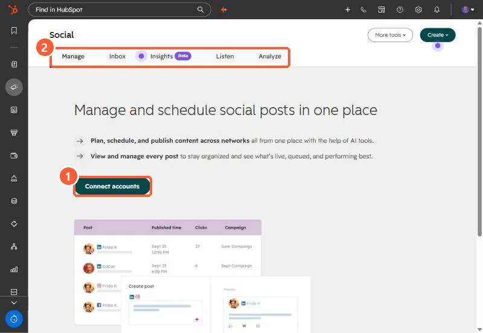

Short answer
Connect accounts in Settings > Marketing > Social or from the Social tool's Connect accounts button. Facebook shows pages you admin and the Instagram professional accounts linked to them. HubSpot stores scheduled posts until they publish, adds tracking to post links, and shortens links by default. Reporting covers posts published from HubSpot or natively for Facebook, Instagram, LinkedIn and YouTube. For X you choose at connection time, and changing it means reconnecting.
1. Connect
Open Social. With no accounts connected, my demo portal shows a Connect accounts button.


2. What HubSpot does with posts
- Scheduled posts are stored and published at the scheduled time.
- Links get HubSpot tracking, and you cannot use custom tracking URLs in posts published through HubSpot.
- Links are shortened to a HubSpot short domain unless you connect a branded Bitly domain.
3. Reporting rules
Facebook, Instagram, LinkedIn and YouTube report on posts published from HubSpot or directly on the network. For X you pick all sources or HubSpot only when connecting. HubSpot cannot monitor Facebook feeds because of API limits.